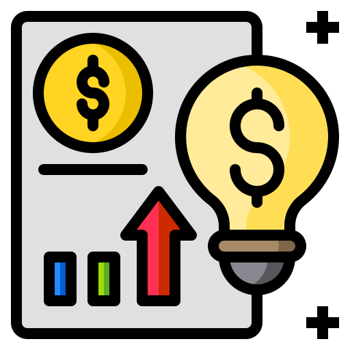

Greek
Once I felt bored and took a Greek course for free. It took a year
to achieve A0. It was exciting.
Marathons
I hate running, but I have 4 medals :) Two years ago I ran 22 km
on the January first.

Cycling
I am keen on cycling. All my leasure time I spend with my cycle.
It has RGB lights on its wheels so I can cycle at night too.

Mixing Languages in Verses
Sometimes when my inspiration comes I can write verses using 2
different languages. It is queit complicated, but funny.

Certificates & Love
I have already received 12 certificates. Not all IT certificates.
I even have the first part of TOEFL Course from Arizona State
University. It is pleasant to recieve them because you can see
your path.

My ideas
Maybe it is not a fact, but one of all my dreams. I have some
creative small business ideas which I would like to implement in
life.